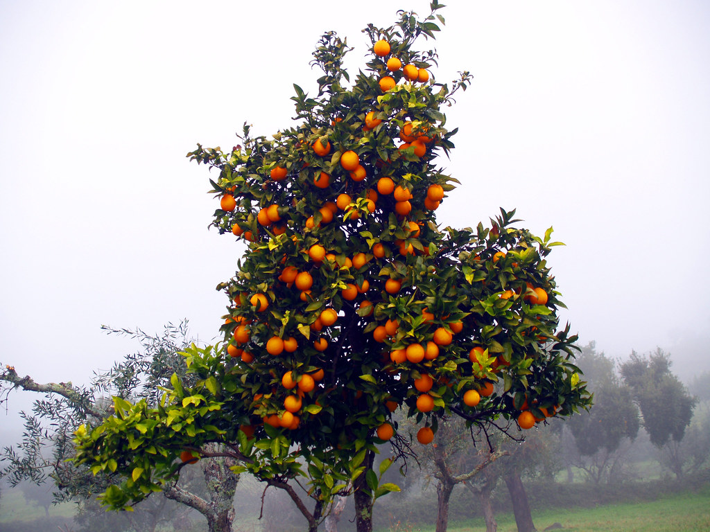

Fundada com a visão de promover práticas agrícolas sustentáveis, no Vale das Laranjeiras, cada árvore é cultivada com amor e respeito pela natureza.
Nosso compromisso com a qualidade começa desde a seleção criteriosa das variedades de laranjas até o manejo cuidadoso dos pomares, garantindo frutas frescas, suculentas e cheias de sabor.

A colheita das laranjas é feita com um planejamento cuidadoso, ou seja, quando os frutos atingem a maturidade ideal, o que varia de acordo com a qualidade das laranjas e das condições climáticas.
Planejamos a colheita para garantir uma produção contínua e de alta qualidade.